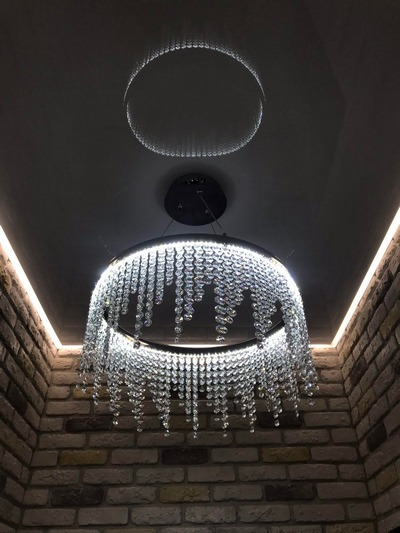
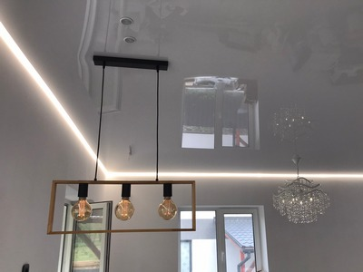
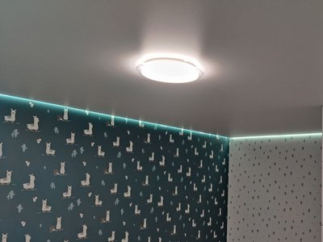
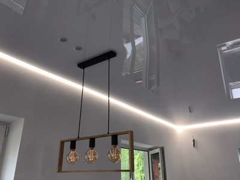
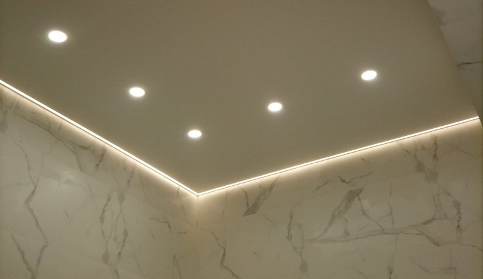

Парящие натяжные потолки от компании Nova Stelya

Парящий потолок с одной стороны вызывает большие положительные эмоции, с другой не является слишком сложным по сравнению со стандартным одноуровневым натяжным потолком. Поэтому не удивительно, что наша компания Nova Stelya довольно часто выполняет заказы по его созданию.
Что такое парящий натяжной потолок
Суть такой конструкции – наличие светодиодной ленты, которая устанавливается по периметру натяжного полотна. При ее включении свет маскирует стык полотна со стеной и создается иллюзия его парения.
Конструктивно это осуществляется следующим образом. Используется специальный алюминиевый багет, в котором выполнен паз для светодиодной ленты. После установки багетов в них заводится эта лента. Также крепится блок питания и блок управления (если используется RGB лента, которая способна менять цвет). Затем паз с лентой закрывается полупрозрачной вставкой. Поэтому в дневное время ленту не видно.
При включении получается рассеянный свет. Наличие полупрозрачной вставки очень важно. Без нее эффекта парения не получится. Будет просто натяжной потолок, освещенный светодиодной лентой. Если установлена RGB лента, то при помощи пульта или программно можно менять ее цвет – с красного на зеленый или синий и т.д.

Преимущества парящего натяжного потолка
Самое главное преимущество – великолепный внешний вид при сравнительно небольших затратах. Произведенный эффект сложно описать словами. Это необходимо только видеть. Парящий потолок отлично сочетается с другими видами. Светодиодную ленту можно установить в натяжной потолок «Звездное небо». Для резных (apply) потолков существуют специальные багеты, в которых можно установить светодиодную ленту и т.д. В портфолио нашей компании Nova Stelya. Вы можете увидеть примеры наших парящих натяжных потолков.
Второе преимущество – это доступная цена. Если можно так сказать, парящий натяжной потолок имеет отличное соотношение красоты к цене. Если у вас нет средств, например, на потолок «Звездное небо» или многоуровневую конструкцию, но хотите иметь не обычный стандартный потолок, а что-то более интересное, заказывайте парящий вариант. Не пожалеете! Кстати, и в многоуровневых конструкциях также часто используется этот эффект парения. Например, таким образом отделяют границу нижнего уровня от верхнего.

Монтаж парящего натяжного потолка
Установка парящего натяжного потолка мало чем отличается от общепринятой схемы:
- Измерение геометрических размеров помещения.
- Выкройка под него натяжного полотна с учетом установки его гарпунным способом.
- Разметка базового потолка и стен.
- Укрепление на стены багетов.
- Крепление на стены и потолок электропроводки.
- Установка блока питания и блока управления (обычно ставятся в углу потолка).
- Установка в багеты светодиодной ленты.
- Проверка работоспособности системы освещения.
- Установка натяжного полотна.

Преимущества компании Nova Stelya
Мы более 10 лет занимаемся установкой натяжных потолков в Киеве и области. За это время выполнили тысячи проектов, в том числе и с парящими потолками. Поэтому, благодаря опыту наших специалистов, отличному знанию поставщиков, мы можем гарантировать:
- Установку только сертифицированных, экологически безопасных натяжных потолков от известных брендов.
- Высокое качество работ. Заключаем с клиентом договор и предоставляем 12 летнюю гарантию.
- Оперативность. Парящий потолок в помещении до 25 м2 мы установим за 4-5 часов. С момента оформления заказа до его реализации проходит максимум 3-4 дня.
- Большой ассортимент натяжных потолков – тканевых, пленочных, любых фактур и цветов.
- Выгодные цены.

Ответы на часто задаваемые вопросы по парящим натяжным потолкам
🤗 Можно ли сделать парящим тканевый натяжной потолок?
Да. Есть багеты для парящих тканевых натяжных потолков. Наша компания неоднократно устанавливала их в Киеве и области. Используем продукцию брендов Clipso (Франция), Descor (Германия), Cerutti (Италия).
🤗 Какие светодиодные ленты вы используете в парящих натяжных потолках?
Мы предлагаем клиенту несколько видов светодиодных лент – монохромные и многоцветные (RGB) разных производителей и разных ценовых категорий. Клиент может сам предложить свою ленту. Но в этом случае наша гарантия на нее не распространяется.
🤗 Вместе со светодиодной лентой в парящих натяжных потолках устанавливаются ли точечные источники света?
Как правило, да. Светодиодная лента в данном случае выполняет больше декоративную, чем прикладную роль. Для освещения конкретной зоны комнаты лучше использовать точечные светильники.
🤗 Для каких стилей уместен парящий натяжной потолок?
Для любых. В том числе для классического стиля - с хрустальными люстрами, строгим дизайном мебели т.д.
🤗 Какая цена парящего натяжного потолка?
Зависит от множества факторов – используемого натяжного полотна (тканевое, пленочные, какого бренда), используемой светодиодной ленты. Для пленочных потолков цена начинается от 250 грн/м2